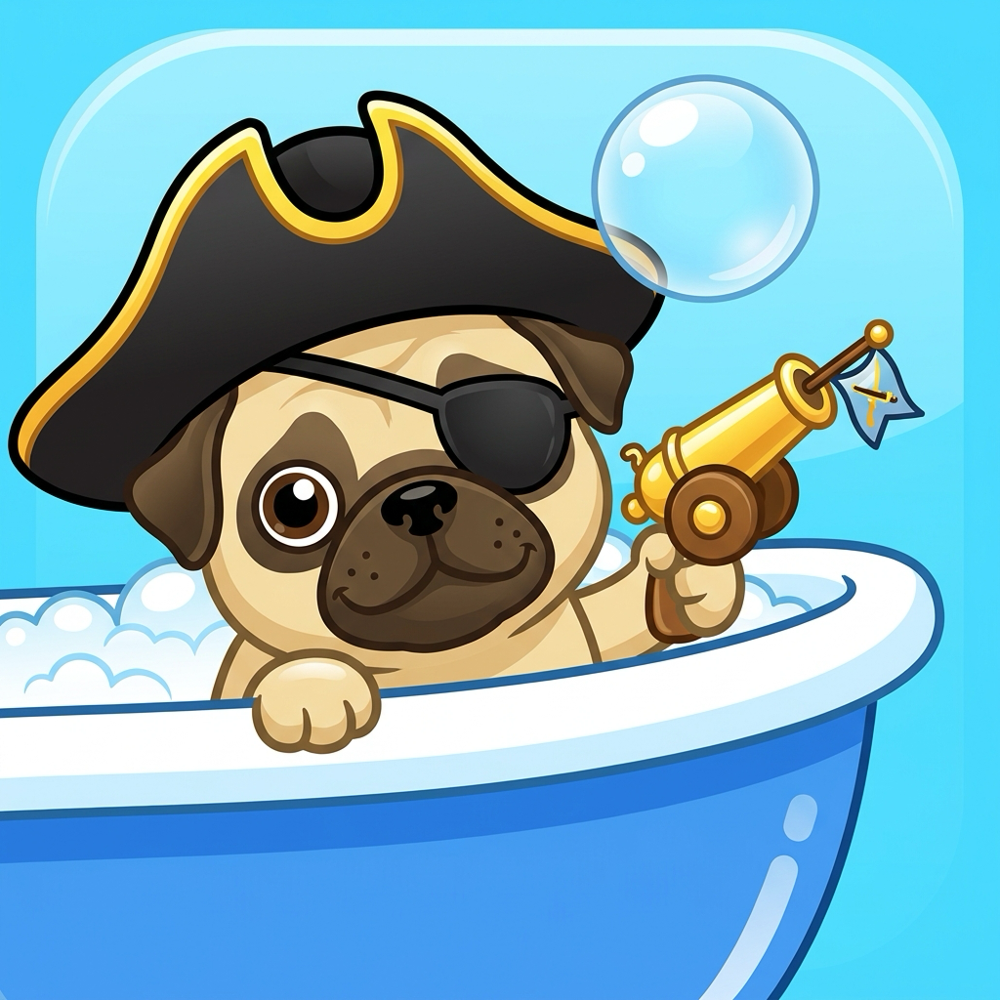

Classic ship-sinking strategy, rebuilt as fast bathtub pirate duels.
| Developer | Brevin Bell — solo indie developer |
| Release | August 2026 |
| Platform | iPhone and iPad (iOS 18+) |
| Price | Free, with optional in-app doubloon packs (all gameplay content earnable in-game) |
| Genre | Turn-based naval strategy / board |
| Age rating | 4+ — family-friendly cartoon toy combat |
| Multiplayer | Async online battles & instant chat via Game Center; same-device Pass & Play |
| Languages | English, Spanish, French, German, Brazilian Portuguese, Japanese, Simplified Chinese |
| App Store | apps.apple.com/app/id6792769794 |
| Support | brevinb.github.io/TubPirates/support.html |
| Privacy | Privacy policy — anonymous analytics only, no tracking, no ads |
| Press kit | brevinb.github.io/TubPirates/press/ |
Tub Pirates is a free iPhone and iPad strategy game that turns classic ship-sinking duels into fast bathtub pirate battles. Hide your fleet of bath toys in the bubbles, take turns firing cannonballs into your rival's water, and sink every enemy ship before they sink yours.
The familiar guessing duel is rebuilt as a hand-crafted toy world: a circular tub for an ocean, a rubber duck flagship, special cannons with personality, unlockable rival captains, collectible fleets, pass-and-play, and online Game Center battles.
One sentence: Tub Pirates is Battleship-style naval strategy with bathtub pirates, special cannon shots, unlockable captains, collectible toy fleets, and online play.
Short blurb: Sink toy fleets, duel rival pirate captains, and collect legendary bathtub armadas in a quick, family-friendly iPhone and iPad strategy game.
Tub Pirates is built by one developer, Brevin Bell, and began life as an entry in RevenueCat's Shipaton hackathon — going from empty repo to the App Store in a single summer. It's balanced the honest way: extensively playtested at home, where the toughest rival captain of all turned out to be the developer's wife.
Tap any image for full resolution (1320×2868). Free to use in coverage.
Tub Pirates is free to download with every mode playable at no cost, so no review code is needed — just install and play. Promo codes for premium doubloon content and additional assets (gameplay video, captain portraits, fleet art) are available on request: brevbot2@gmail.com.
All material on this page may be freely used for articles, videos, and social posts about Tub Pirates. © 2026 Brevin Bell.
{kind=link}
{kind=link}
{kind=link}
{kind=link}
{kind=link}
{kind=link}
{kind=link}